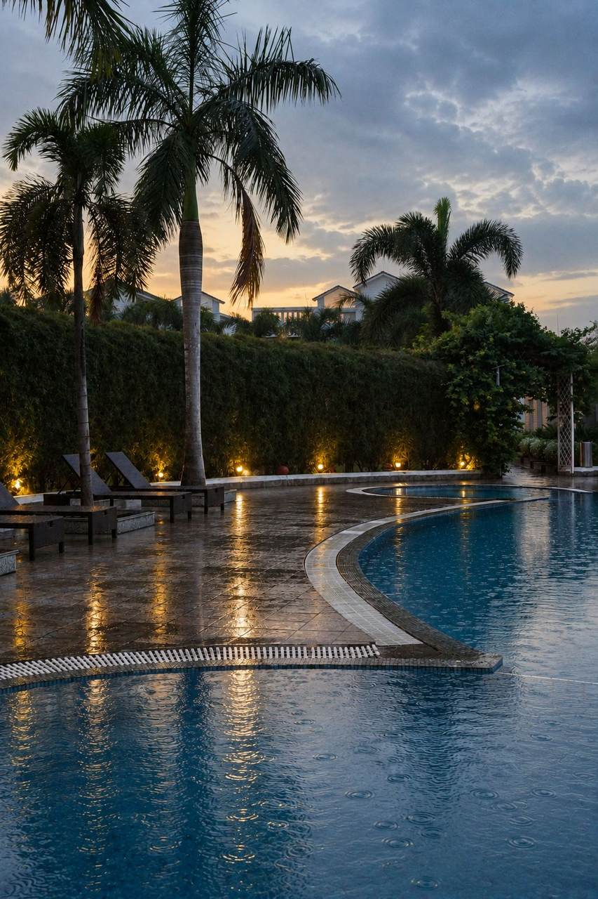
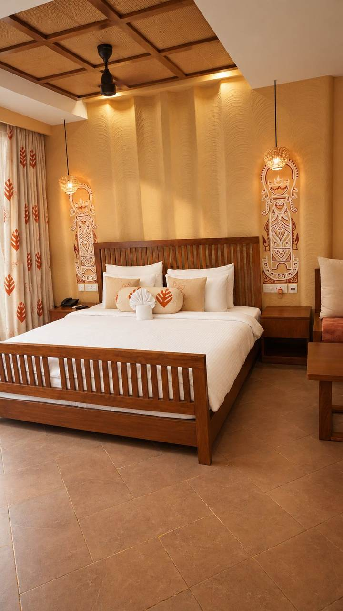
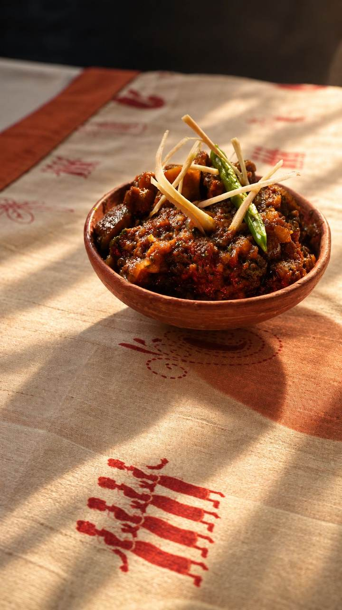
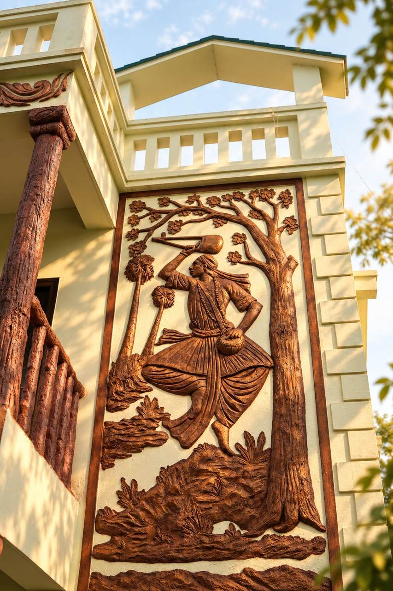
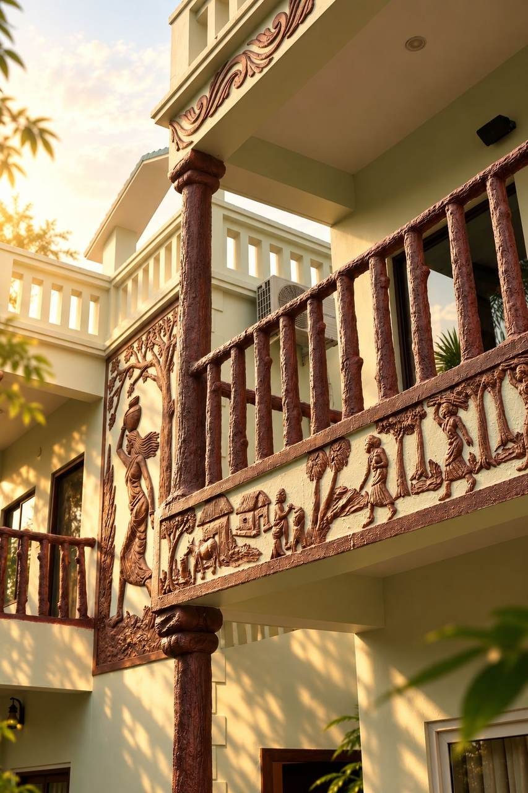

Around The Grounds
A day at Mohor Kutir






A resort at the edge of Tagore's Santiniketan, where red earth, open sky and an old, unhurried quiet still set the pace of the day.
Fifteen minutes from Visva-Bharati and the sal forest at Sonajhuri, Mohor Kutir keeps a low profile among palms and open paddy — rooms built close to the ground, terracotta carved by local hands, and a kitchen that still cooks the way Birbhum always has.
From Deluxe Rooms to interconnecting Club Rooms, each dressed in cane, sal-wood and hand-block linen.
All-day dining built around Birbhum's own pantry — river fish, mustard, rice grown within sight of the table.
The Saturday haat, the Kopai's sandy banks and Visva-Bharati's old campus all sit within easy reach.





Long before Mohor Kutir, this stretch of Birbhum belonged to a poet, a university built to bridge East and West, and a river the colour of the sky. The resort's own terracotta walls are cut from the same red laterite that shaped older temples nearby — a craft borrowed, not imported.
Santiniketan is a UNESCO World Heritage Site, and its calendar still runs on the old rhythms — a Saturday market by the Kopai, a winter fair, a spring festival in yellow.
Read Santiniketan StoriesNothing here is built to be noticed. It is built to be lived in slowly, the way the land already moves.Mohor Kutir